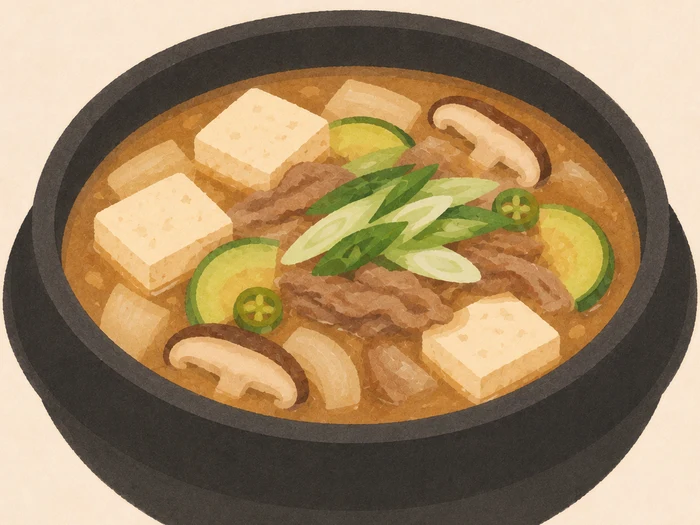
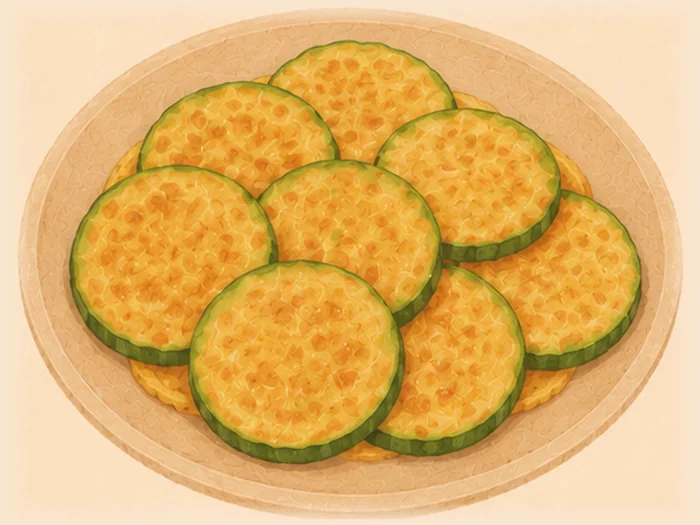
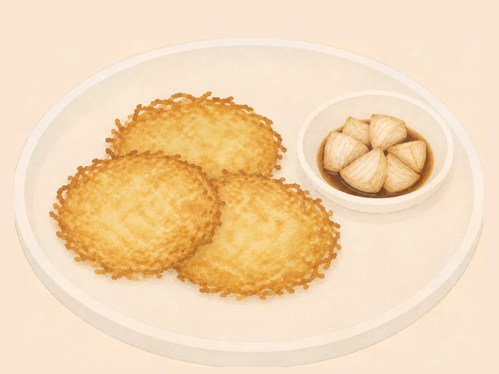
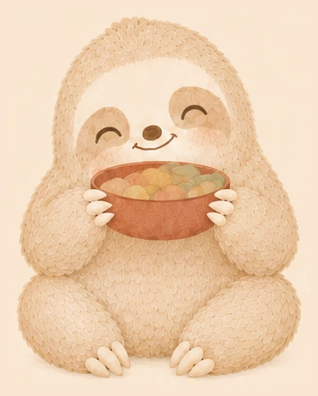

越接近完成，圖越清晰越有顏色。零新素材，用的是你那 21 張菜色圖。



像鍋子慢慢裝滿。灰底是「還沒到」，彩色是「已經走過的」。
用 app 現有的 #wobble 濾鏡畫圓弧，跟對話框、卡片同一套筆觸。
#wobble
用現有的 bg/wood.webp 當桌面（食譜牆用的同一張），三道菜擺上去。 沒生新圖 —— 先看這樣夠不夠，不夠再生一張真正的木桌。
bg/wood.webp
